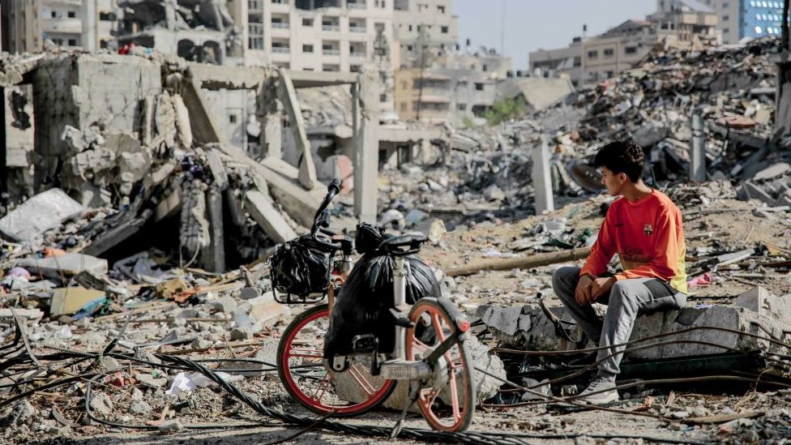

War, a relentless and harrowing phenomenon, reshapes the very fabric of societies, leaving indelible scars on both the physical landscape and the human psyche. Throughout history, conflicts have erupted over resources, ideologies, and territorial disputes, each bringing a unique yet universally devastating impact. The immediate consequences are often stark: loss of life, widespread destruction, and the disintegration of communities. However, the ripple effects of war extend far beyond the battlefield. They infiltrate economies, stifle progress, and sow seeds of trauma that can persist for generations. Amid the chaos, stories of resilience and humanity's capacity for both cruelty and compassion emerge, offering a poignant reminder of the complex nature of conflict. In examining the causes and effects of war, one uncovers a tapestry of motives and outcomes, revealing much about human nature and the perennial struggle for power, survival, and justice.
